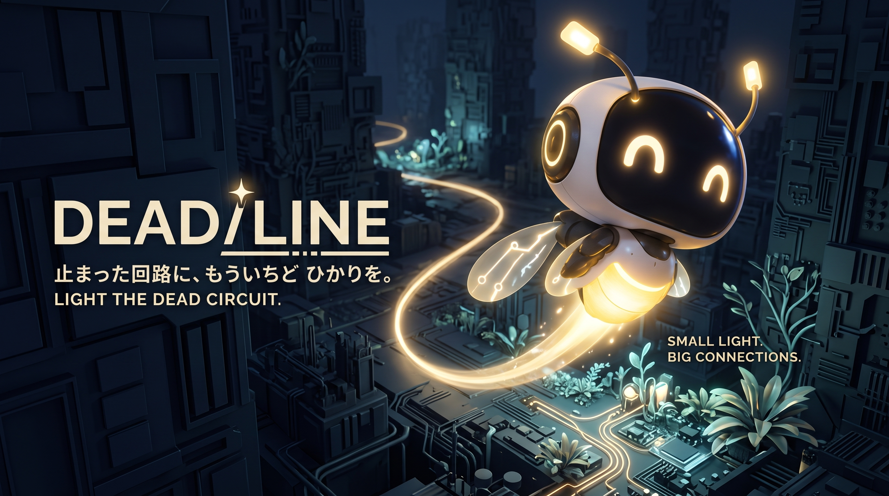

01 / EVADEMOVE AND AVOID
MOVE AND AVOID
ENEMY FIRE.
黄金色に光るPicoを動かして
敵の攻撃を避けよう。
MOUSE / POINTERMOVE PAD / DRAG

止まった回路に、もういちど ひかりを。
Picoの黄金のLINEで、シアンのTARGETをつなごう。
スマートフォンはMOVE PADと画面ボタンで操作。
DEAD/LINE — HTML · CSS · JAVASCRIPT
GRAPHICS: CANVAS / SOUND: WEB AUDIO
黄金色に光るPicoを動かして
敵の攻撃を避けよう。
TIME STOPすると敵と弾丸が停止。
止まった弾幕の中で攻撃ルートを考えられる。
Picoの黄金の光跡を一筆書き。
シアンの輪を通るとTARGETをロック。
時間切れになる前に実行。
Picoが線上を高速移動しTARGETを連続撃破する。
CIRCUIT ATLAS / 01—05
止まった回路に、
もういちど ひかりを。
GARDENから旅をはじめよう。